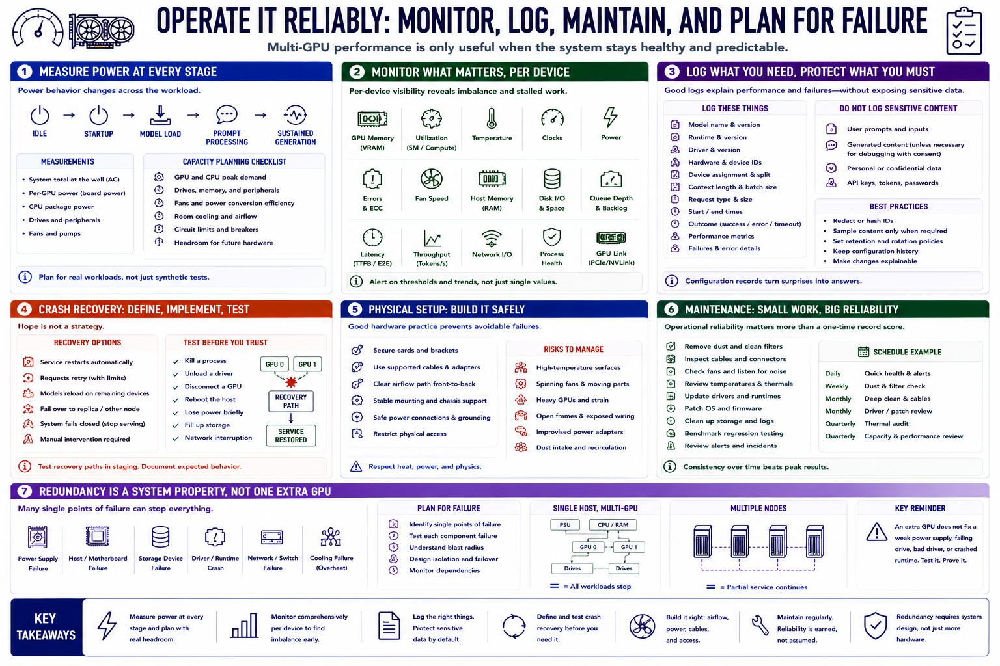

Operations, Monitoring, and Safety
Connecting to LMS... Progress: in progress

Narration
Measure power draw at idle, startup, model load, prompt processing, and sustained generation. Capacity planning includes GPU, CPU, drives, fans, power conversion, room cooling, circuit limits, and future hardware.
Monitor GPU memory, utilization, temperature, clocks, power, errors, fan speed, host memory, disk, queue depth, latency, and process health. Per-device visibility helps reveal imbalance and stalled work.
Logs should preserve model, runtime, driver, device assignment, split, context, batch, request outcome, and failure without retaining sensitive prompts unnecessarily. Configuration records make performance changes explainable.
Crash recovery needs defined behavior. Decide whether services restart, requests retry, models reload on remaining devices, or the system fails closed. Test recovery before assuming one extra GPU provides redundancy.
Physical setup requires secure cards, supported cables, clear airflow, stable mounting, safe power, and restricted access. High-temperature surfaces, spinning fans, heavy cards, and improvised open frames require appropriate controls.
Maintenance includes dust removal, filter inspection, cable and fan checks, thermal review, driver patching, storage cleanup, and benchmark regression. Operational reliability matters more than a one-time record score.
An extra GPU is not automatic redundancy. A shared power supply, host, storage device, driver, or runtime can still stop every workload. Test component and service failure behavior explicitly.